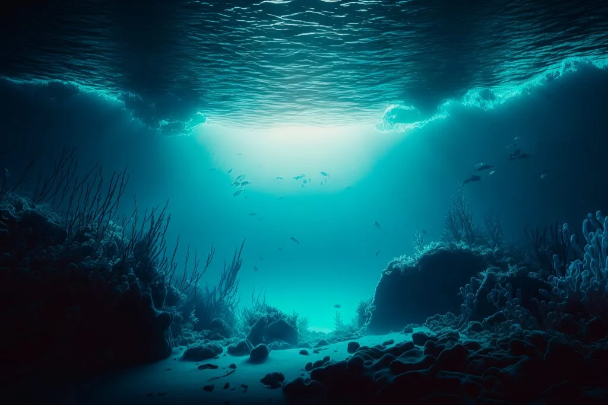

Você já ouviu falar que “sabemos mais do espaço do que do oceano”? Esta frase faz sentido e ressalta o quão difícil é explorar o fundo do mar, visto que conhecemos apenas 1/4 do que cobre 70% do planeta Terra. Mas afinal, por que é tão difícil mapear sua totalidade?

Primeiramente, é preciso saber a imensidão que isso representa. Responsável por cobrir boa parte da Terra — só o Pacífico ocupa 45% — , o mar pode chegar a níveis de profundidades completamente inacessíveis para o ser humano — aí começa o primeiro problema de mapear o oceano.
A profundidade média dos oceanos é maior que 3,6 quilômetros. Para se ter ideia, o nível de 100 metros — onde começa a síndrome de descompressão — já pode ser mortal aos humanos. É claro que há registro de pessoas que desceram bem mais que isso, como James Cameron, diretor do filme Titanic.

A nível de curiosidade, o ponto mais profundo conhecido pelo homem é a Fossa das Marianas, com mais de 10,9 quilômetros — maior até mesmo que o Monte Everest. Caracterizada por depressões longas e estreitas, o ponto mais profundo também fica nela, o Challenger Deep, com quase 11 km.
Com o passar do tempo, foi possível analisar as características dos oceanos de acordo com a profundidade, além de descobrir algumas espécies que precisam de uma certa altitude para viver.
A tecnologia trouxe ainda drones submersíveis (ou ROV, sigla em inglês para “veículo aquático operado remotamente”), que permitem aos pesquisadores explorar as profundezas — mas esse uso ainda representa uma fração minúscula.

É neste momento que a frase sobre conhecermos mais o espaço do que o oceano se cumpre. Enquanto 12 astronautas passaram um total coletivo de 300 horas na superfície lunar, só três pessoas passaram cerca de três horas explorando o Challenger Deep, segundo o Woods Hole Ocenographic Institution.